全78定義 / 32×32 RGBA / 4倍表示。背景を切り替えて透過を確認。
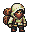
player.survivor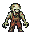
monster.ghoul_worker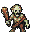
monster.ghoul_warrior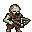
monster.ghoul_archer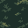
terrain.field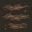
terrain.roadobstacle.stone_wall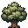
obstacle.tree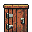
obstacle.wooden_door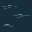
terrain.pond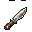
item.knife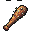
item.club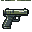
item.glock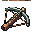
item.crossbow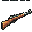
item.sks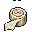
item.bandage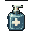
item.disinfectant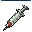
item.syringe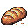
item.bread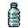
item.mineral_water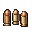
ammo.pistol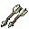
ammo.bolt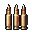
ammo.rifle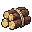
item.wood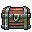
item.treasure_chest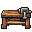
facility.workbench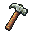
item.hammer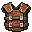
item.leather_armor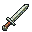
item.short_sword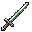
item.long_sword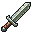
item.bastard_sword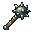
item.mace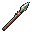
item.spear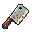
item.cleaver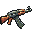
item.ak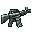
item.m16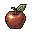
item.appleitem.raw_meat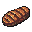
item.cooked_meat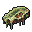
item.rotten_meatitem.carrot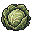
item.cabbage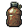
item.dirty_water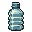
item.clean_water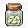
item.vitamins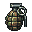
item.frag_grenade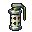
item.flash_grenade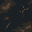
terrain.wasteland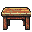
obstacle.table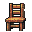
obstacle.chair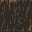
obstacle.wooden_wall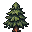
obstacle.conifer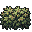
obstacle.hedgeobstacle.fenceobstacle.lampitem.shieldmonster.ghoul_runnermonster.ghoul_butchermonster.ghoul_guardmonster.ghoul_howlermonster.ghoul_scavengermonster.ghoul_stalkermonster.ghoul_brutemonster.ghoul_riflemanitem.hand_drillitem.metal_sawitem.metal_fileitem.forging_hammeritem.sewing_kititem.cooking_kititem.wood_sawitem.metal_stockitem.clothitem.leather_pieceitem.threaditem.charcoalitem.wood_handleitem.crafting_storage